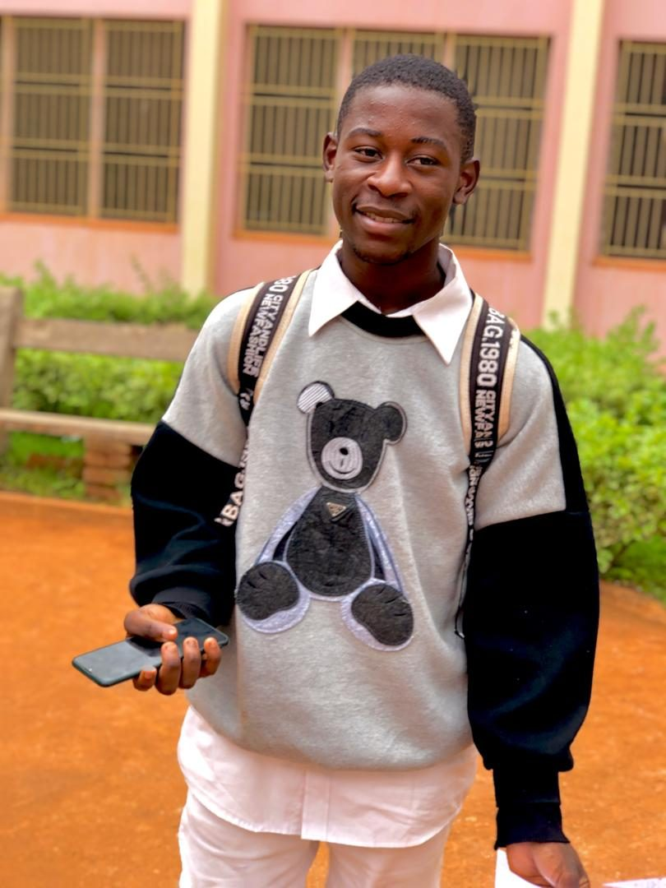

Développement logiciel
Conception d’applications web et métier, logique applicative, API et interfaces pensées pour les usages.
PORTFOLIO PERSONNEL ABIDJAN, CÔTE D’IVOIRE
Je suis Christian Camille Ntagne Fonkam, développeur orienté architecture logicielle. J’aime concevoir des applications utiles, structurer les données et donner vie à des expériences numériques cohérentes.

Mon approche se situe au croisement du développement logiciel, de la structuration des données et de la compréhension des besoins métier.
Mon parcours m’a amené à travailler sur des outils de gestion, des plateformes web, des dispositifs de collecte et de visualisation de données. Je m’intéresse particulièrement à la manière dont une architecture claire peut rendre un produit plus fiable, plus simple à utiliser et plus facile à faire évoluer.
Conception d’applications web et métier, logique applicative, API et interfaces pensées pour les usages.
Collecte, organisation, traitement et visualisation de données pour faciliter l’analyse et la décision.
Modélisation, bases de données, conteneurisation et mise en place d’environnements de développement.
Quelques réalisations et initiatives qui illustrent ma manière d’aborder les problèmes : comprendre, structurer, construire et améliorer.
Conception d’une solution de consolidation des résultats électoraux, avec gestion des scrutins, collecte terrain, contrôle des incohérences et rapports visuels.
Un projet de solution numérique dédié à l’organisation et au pilotage des activités d’un établissement de restauration.
Contribution à la présence numérique d’une organisation engagée dans l’action communautaire, avec une attention portée aux contenus et à leur mise en valeur.
Digitech · Remote
Knowage, Docker, PostgreSQL, cartographie et tableaux de bord analytiques.CIVIPOL · Abidjan
Collecte avec KoboToolbox, suivi qualitatif et calcul d’indicateurs.Club d’Athlétisme le Progrès de l’Ouest (CAPO)
Administration, évolution du site et gestion de contenus.CIVIPOL · Bafoussam
Outil de gestion statistique, collecte et visualisation des données.IUT de Bandjoun
Application de gestion pour agence de transport interurbain.Quick Do Canada · Bafoussam
Application de gestion de stock JavaFX et découverte du pentesting.Agence Universitaire de la Francophonie (AUF) – Afrique de l’Ouest
Téléinformatique, spécialité Génie logiciel et Administration des réseaux.Université Française d’Abidjan
Génie logiciel / architecture logicielle.Université du Mans · France
Institut Catholique de Paris
IUT de Bandjoun — Université de Dschang
Conception et développement de réseaux informatiques.IUT de Bandjoun
Télécommunications et ingénierie des réseaux.Java · PHP · Python · C · JavaScript · Spring Boot · Angular · React · Laravel
PostgreSQL · MySQL · Oracle · MongoDB · Power BI · Knowage · QGIS · KoboToolbox
Docker · Linux · Git / GitHub · UML · Merise · LaTeX · Markdown
Français · Anglais
Une collaboration, une idée à explorer ou simplement envie d’échanger autour du numérique ? Je serai ravi de vous lire.